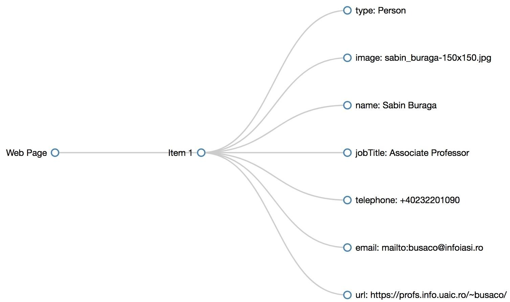
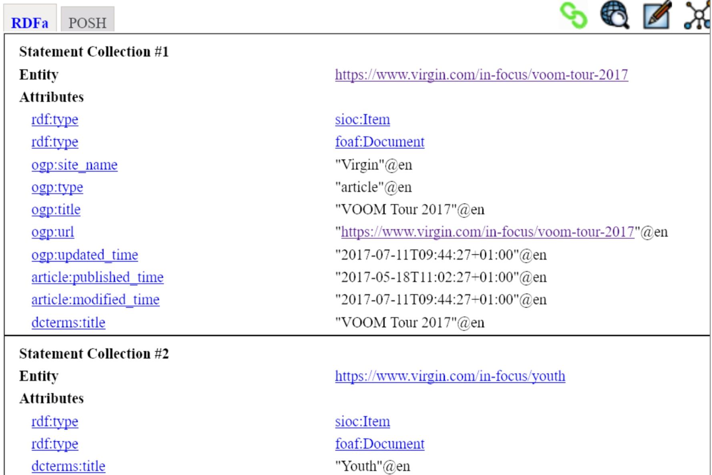
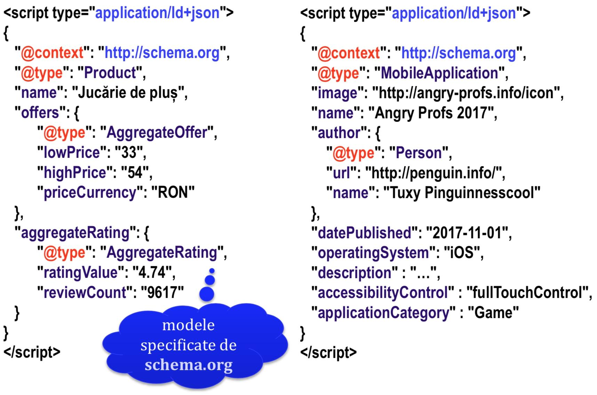

Data publicării: 14.05.2018
Autor articol: Sabin Buraga
Preambul
Articolul de față se dorește a fi o continuare a materialului prezentat anterior: “Specificarea meta-datelor asociate resurselor Web”.
Dacă în lucrarea trecută ne-am concentrat asupra modalității de exprimare a meta-datelor via modelul RDF (Resource Description Framework) constituit din triple – a se consulta (Allemang & Hendler, 2011; Buraga, 2004), cu referire la plasarea acestora direct în documentele HTML5 pe baza suitei de vocabulare schema.org, în cele ce urmează vom prezenta succint alte forme de serializare a triplelor RDF și anume:
- RDFa – utilizarea atributelor HTML pentru exprimarea construcțiilor RDF și
- JSON-LD – posibilitatea de a extinde obiectele JSON (JavaScript Object Notation) cu adnotări semantice în vederea interconectării datelor conform inițiativei Linked Open Data.
Desigur, vor fi puse la dispoziție exemplificări ilustrând diferite utilizări pragmatice.
RDFa
Dezavantajul recurgerii la scheme de microdate HTML5, inclusiv a folosirii modelelor conceptuale oferite de schema.org, este cel vizând extensibilitatea și flexibilitatea. În cazul în care dorim să recurgem la alte vocabulare și/sau ontologii (uzual, publice), avem nevoie de o specificație cu caracter general. Aceasta este reprezentată de standardul RDFa – o extensie a vocabularului HTML5 oferită de Consorțiului Web. Scopul primar este de a oferi suport pentru publicarea facilă a datelor interconectate (linked data) pe baza tehnologiilor Web curente în vederea reutilizării acestora. O serie de considerații de interes pot fi studiate în lucrările (Wood et al., 2014) și (Dodds & Davies, 2012).
RDFa reprezintă un alt mod de serializare a construcțiilor RDF, de data aceasta direct în cadrul familiarelor marcaje HTML. Astfel, RDFa implică adoptarea unor atribute HTML specifice menite a modela (adnota explicit) datele disponibile într-o pagină Web în vederea procesării acestora de către un program. Minimal, se pot folosi atributele specificate de recomandarea RDFa Lite (W3C, 2015):
- vocab – desemnează URL-ul vocabularului de date sau a modelului conceptual dorit (schema.org, DCMI, FOAF și altele);
- typeof – precizează un tip de date (clasă de “lucruri” – things); exemple: Event, Person, Product etc.;
- property – specifică o proprietate asociată tipului de date; de pildă, pentru tipul Event sunt definite proprietățile (atributele) duration, location, startDate, endDate, performers,… conform celor de la http://schema.org/Event (inclusiv restricțiile aferente);
- resource – indică un identificator de resursă (subiectul) despre care se “vorbește” în termeni de meta-date;
- prefix – desemnează prefixul unui vocabular specific, facilitând referirea acestuia (e.g., rdf pentru RDF, rdfa pentru RDFa, xsd pentru XML Schema și așa mai departe).
Un exemplu simplu este următorul, în care se adnotează explicit în HTML via RDFa faptul că Sabin Buraga este o persoană, având asociate meta-date referitoare la situl propriu, locul de muncă actual și adresa de poștă electronică pe baza modelului schema.org:
<div vocab="http://schema.org/" typeof="Person"> <img property="image" src="https://itransfer.space/wp-content/uploads/2017/03/sabin_buraga-150x150.jpg" /> <h1 property="name">Sabin Buraga</h1> <h2 property="jobTitle">Associate Professor</h2> <div> Phone: <span property="telephone">+40232201090</span> </div> <div> E-mail: <a property="email" href="mailto:busaco@infoiasi.ro">busaco@infoiasi.ro</a> </div> <div> Sit Web: <a property="url" href="http://profs.info.uaic.ro/~busaco/" title="Situl lui Sabin Buraga">http://profs.info.uaic.ro/~busaco/</a> </div> </div> Reprezentarea vizuală a grafului RDF corespunzător e generată de instrumentul Web RDFa Play și poate fi urmărită în ilustrația de mai jos.

Astfel, incluzând adnotări RDFa, transformăm orice document HTML într-un API, un instrument de procesare având acces la date structurate – “purtând” un înțeles (adică o semantică) –, nu doar la conținut textual (“things, not strings”).
Pentru prelucrare, se poate recurge la diverse biblioteci/module precum clj-rdfa (Closure), EasyRDF (PHP), Green Turtle (JavaScript), PyRDFa (Python), RDF::RDFa (Ruby), semargl (Java), vie (Node.js).
RDFa este baza pentru alte specificații ca rNews oferind un model conceptual vizând includerea de meta-date din domeniu publicațiilor (e.g., știri, articole, periodice) în documentele HTML – un standard IPTC (International Press Telecommunications Council).
Pentru extragerea unor date de interes se poate folosi instrumentul OpenLink Structured Data Sniffer oferit liber ca extensie de browser Web. O exemplificare este etalată de captura-ecran următoare unde se poate observa utilizarea vocabularelor Dublin Core Terms, FOAF (Friend Of A Friend), OGP (Open Graph Protocol) și SIOC (Semantically Interconnected Online Communities).

Ca și construcțiile schema.org, aserțiunile RDFa sunt indexate de principalele motoare de căutare actuale. Modelul RDFa prezintă cea mai bună expresivitate, fără a depinde de un vocabular specific.
JSON-LD
Cum majoritatea API-urilor publice actuale – dezvoltate uzual conform stilului arhitectural REST (REpresentational State Transfer) – pun la dispoziție date în format JSON, apare necesitatea augmentării acestora în vederea exprimării meta-datelor și relațiilor dintre diverse entități disponibile pe Web.
Contextul mai larg este reprezentat de inițiativa Linked Data care reprezintă o paradigmă de publicare a datelor Web recurgând la tehnologiile Web existente cu scopul de a constitui un spațiul global al datelor deschise (Heath & Bizer, 2011).
Avantajele principale sunt:
- reducerea redundanței,
- facilitarea reutilizării,
- permiterea descoperirii datelor/cunoștințelor de interes,
- maximizarea interconectivității dintre “lucruri” înrudite,
- adoptarea unor abordări pragmatice.
Așadar, aplicațiile Web pot publica (serializa) datele publice într-un format bazat pe JSON, oferind în plus anumite adnotări semantice pe baza unor construcții speciale exprimate tot în JSON. Această abordare este concretizată de inițiativa și standardul JSON-LD.
Noile proprietăți JSON-LD sunt @id @value @type @set @list @language @context @graph. Contextul adnotărilor (adică vocabularul de termeni) este referit direct în cadrul documentului JSON sau prin intermediul unui URI extern.
De asemenea, declarațiile JSON-LD pot fi incluse în documentele HTML5 via elementul <script> așa cum se poate remarca în exemplele următoare (Buraga, 2018):

O suită de exemplificări, plus maniere de testare, sunt oferite de instrumentul JSON-LD Playground disponibil liber pe Web. Actualmente, aserțiunile JSON-LD sunt indexate, de asemenea, de motoarele de căutare importante.
Drept instrumente de procesare (i.e. biblioteci sau module disponibile în regim open source) putem enumera: json-ld.net (C#), JSON-goLD (Go), JSONLD-JAVA (Java), jsonls.js (JavaScript), PyLD și RDFLib-jsonld (Python), php-json-ld și JsonLD (PHP).
Referințe bibliografice
- Allemang, D., Hendler, J., Semantic Web for the Working Ontologist (2nd Edition), Morgan Kaufmann, 2011.
- Buraga, S., Semantic Web. Fundamente și aplicații, Matrix Rom, 2004: http://www.slideshare.net/busaco/sabin-buraga-semantic-web-fundamente-i-aplicaii
- Buraga, S., Dezvoltarea aplicațiilor Web (Web Application Development), Facultatea de Informatică, Universitatea “Alexandru Ioan Cuza” din Iasi, Romania, 2018: http://profs.info.uaic.ro/~busaco/teach/courses/wade/
- Dodds, L., Davis, I., Linked Data Patterns. A Pattern Catalogue for Modelling, Publishing, and Consuming Linked Data, 2012: http://patterns.dataincubator.org/book/
- Heath, T., Bizer, C., Linked Data: Evolving the Web into a Global Data Space, Synthesis Lectures on the Semantic Web: Theory and Technology, 1:1, 1-136. Morgan & Claypool, 2011: http://linkeddatabook.com/editions/1.0/
- Wood, D. et al., Linked Data. Structured Data on the Web, Manning, 2014.
- * * *, JSON-LD 1.0. A JSON-based Serialization for Linked Data, W3C Recommendation, 2014: http://www.w3.org/TR/json-ld/
- * * *, JSON-LD Playground, 2018: http://json-ld.org/playground/
- * * *, OpenLink Structured Data Sniffer, 2018: http://osds.openlinksw.com/
- * * *, RDFa Current Status, W3C, 2018: http://www.w3.org/standards/techs/rdfa
- * * *, RDFa. Linked Data in HTML, 2018: http://rdfa.info/
- * * *, RDFa Lite 1.1 (2nd Edition), W3C Recommendation, 2015: http://www.w3.org/TR/rdfa-lite/
- * * *, Schema.org, 2018: http://schema.org/docs/gs.html